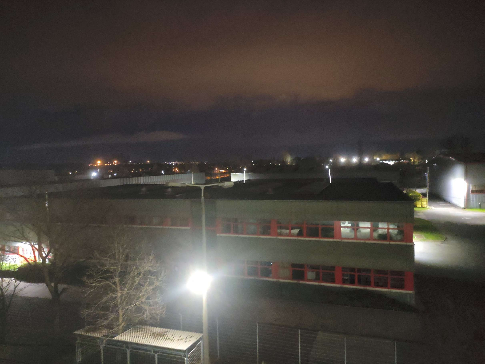

A kollégium informatikai rendszeréhez új jelszót keresünk. Kérlek adjatok ötleteket megfelelő bonyolultságú
jelszavakra. Amennyiben az általad ajánlott jelszó megfelel a kritériumoknak, akár rendszergazdai
hozzáférést is kaphatsz a hálózatunkhoz!
A rendszer továbbá ajánlatot ad, hogyan tehetnéd még erősebbé a jelszót!
Néhány fontos kitétel:
Kell tartalmaznia kisbetűt
Kell tartalmaznia nagybetűt
Kell tartalmaznia számot
Kell tartalmaznia speciális karaktert
Mi nem vagyunk hívei a csak lassan és nehezen begépelhető jelszavaknak, ezért bármilyen hosszúságút
megadhattok.
Miért foglalkozunk ennyit a jelszavakkal?
Az erős jelszó az online biztonság alapköve. Egy biztonságos jelszó megnehezíti a rosszindulatú támadók
számára, hogy hozzáférjenek személyes adataihoz, például banki információkhoz, e-mail fiókokhoz vagy
közösségi média profilokhoz. Az egyszerű, könnyen kitalálható jelszavak, mint például a „123456” vagy a
„password”, szinte semmilyen védelmet nem nyújtanak. Egy erős jelszó azonban összetett, tartalmaz számokat,
betűket és különleges karaktereket, ami drámaian megnöveli a feltöréséhez szükséges időt és erőfeszítést.
Az online térben végrehajtott támadások, például az úgynevezett brute force támadások, automatikus
próbálkozásokkal igyekeznek kitalálni a jelszót. Egy erős jelszó azonban elég hosszú és bonyolult ahhoz,
hogy ezek a módszerek ne érjenek célt. Például egy 8 karakteres, véletlenszerű jelszó feltörése akár éveket
is igénybe vehet a modern számítógépekkel. Ezért a hosszabb és véletlenszerű jelszavak használata a legjobb
védekezés az ilyen típusú támadások ellen.
Friss jelszavak
Az erős jelszó nemcsak egyedi, hanem személyes adataink biztonságát is garantálja, különösen, ha több
fiókhoz különböző jelszavakat használunk. Ha ugyanazt a jelszót használjuk mindenhol, akkor egyetlen fiók
kompromittálása az összes többihez is hozzáférést biztosíthat a támadók számára. Ezért fontos a jelszavak
rendszeres frissítése és a jelszókezelő alkalmazások használata, amelyek megkönnyítik a sok különböző és
erős jelszó biztonságos tárolását.

Barátaink védelme
Végül, az erős jelszóval nemcsak magunkat, hanem másokat is megvédhetünk. Ha például egy gyenge jelszó miatt
feltörik az e-mail fiókunkat, és onnan spamet vagy kártékony linkeket küldenek ismerőseinknek, az ő
biztonságukat is veszélyeztethetjük. Az erős jelszó tehát az online közösségünk biztonságának egyik alapvető
eleme. Az adatok védelme érdekében érdemes időt és figyelmet fordítani a megfelelő jelszavak megalkotására
és kezelésére.
"Sharing is caring"
Osszátok meg jelszavaitokat barátaitokkal, ismerőseitekkel is. Így ők is tanulhatnak belőle, milyen egy jó
jelszó. Ha úgy érzed, valamelyik ismerősödnek jobb jelszóra van szüksége, vagy csak szereti a
szerencsejátékokat, akkor küldd el neki is a Tarka Koli weboldalát. Reméljük a kellemes és hasznos weblapunk
minél több emberhez el tud jutni. Nektek pedig további biztonságos netezést, és kellemes ünnepeket kíván
nektek a Tarka Koli csapata teljes csapata.